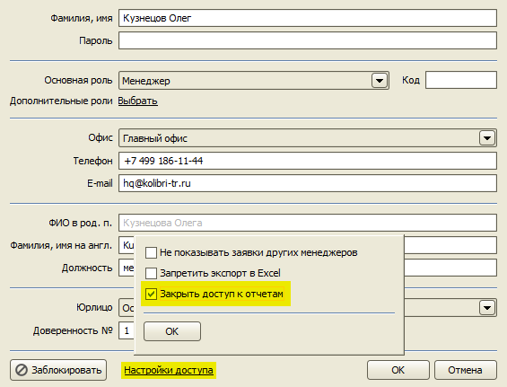

Изменения в версии 2.9.8
- Типовой договор
- Изменения в шаблоне договора
- Новые функции для шаблонов: склонение ФИО, склонение названий городов, определение пола
- Мгновенное обновление шаблонов документов на всех компьютерах в многопользовательской версии
- Изменения в Счете
- Опция закрытия доступа к отчетам
Типовой договор
Начиная с версии 2.9.8 в качестве стандартного договора с туристом в программе используется Типовой договор, утвержденный Минкультуры РФ.
Вы можете загрузить в программу шаблон старого договора, использовавшийся до версии 2.9.8, скачав его по этой ссылке.
Изменения в шаблоне договора
- Добавлена таблица
ВсеУслуги, являющуюся объединением всех таблиц услугАвиабилеты,Проживание,Трансферыи т.д. - В таблицу
Авиабилетытеперь помещаются все услуги по авиаперелету, независимо от наличия или отсутствия детализации рейса. Авиаперелеты без детализации теперь находятся в таблицеАвиаперелеты, а с детализацией - в таблицеАвиаперелетыСРейсом. - Таблица
Трансферытеперь выводит все услуги типа Трансфер, таблицаСтандартныеТрансферывыводит только трансфер с двумя датами туда-обратно, таблицаТрансферыПоДнямвыводит трансферы, когда в заявки более одной услуги трансфера. Т.е., в таблицеТрансферыПоДнямсейчас выводятся данные, которые до версии 2.9.8 выводились в таблицеТрансферы.
Таким образом:
Авиабилеты = Авиаперелеты + АвиаперелетыСРейсом
Трансферы = СтандартныеТрансферы + ТрансферыПоДням
Требуется коррекция ваших шаблонов!
Во всех шаблонах документов заявки необходимо поменять источники таблиц с Трансферы на ТрансферыПоДням. Иначе "стандартные" трансферы будут выводиться два раза. Т.е., вместо старого объявления таблицы:
[Таблица источник=Трансферы]
должно быть следующее:
[Таблица источник=ТрансферыПоДням]
Зачем нужно несколько разных таблиц для вывода услуг по авиаперелету и трансферам?
Программа позволяет вводить данные типы услуг в двух режимах: простом и детализированном. По умолчанию, авиаперелет вводится в простом режиме, когда указывается полный маршрут и не указываются данные конкретных рейсов. Для трансферов простой режим действует, когда введена только одна услуга Трансфер в заявке. В таком случае, в поле описания также вводится полный маршрут туда-обратно и дополнительно указывается дата обратного трансфера. Распределение услуг по разным таблицам в зависимости от детализации позволяет в шаблоне определить два вида отображения списка услуг. Например, в детализированном варианте авиаперелета можно добавить колонку со временем вылета и колонку с другими параметрами авиаперелета, не доступными в простом варианте.
Для Типового договора лучше использовать детализированный режим авиаперелета и трансфера, когда вводится полная информация об услуге. Детализированный режим для авиаперелета включается специальной галочкой "Детализация рейса", а для детализации трансфера достаточно добавить вторую услугу Трансфер, которая будет соответствовать обратному трансферу.
Новые функции для шаблонов: склонение ФИО, склонение названий городов, определение пола
Добавлены функции для склонения ФИО и названий городов, а также функции для определения пола по имени или фамилии.
Они доступны в шаблонах документов и в шаблонах смс.
Склонение городов
- ВГороде
- ИзГорода
- ВГород
Функции ВГороде, ИзГорода, ВГород позволяют склонять названия городов. В качестве параметра передается название города в именительном падеже.
- ["в " + ВГороде("Москва")] → "в Москве"
- ["из " + ИзГорода("Москва")] → "из Москвы"
- ["в " + ВГород("Москва")] → "в Москву"
Склонение имен и фамилий
- ИмяРП
- ИмяДП
- ИмяВП
- ИмяТП
- ИмяПП
- ФамилияРП
- ФамилияДП
- ФамилияВП
- ФамилияТП
- ФамилияПП
- ОтчествоРП
- ОтчествоДП
- ОтчествоВП
- ОтчествоТП
- ОтчествоПП
Функции ИмяXX, ФамилияXX, ОтчествоXX и ФиоXX склоняют, соответственно, имя, фамилию, отчество или ФИО полностью. Падеж определяется последними двумя буквами:
- РП – родительный падеж (от Иванова)
- ДП – дательный падеж (к Иванову)
- ВП – винительный падеж (за Иванова)
- ТП – творительный падеж (с Ивановым)
- ПП – предложный падеж (об Иванове)
Определение пола
- Пол
- ПолПоИмени
- ПолПоФамилии
Функции Пол, ПолПоИмени и ПолПоФамилии пытаются определить пол по ФИО, имени или фамилии. Возвращают строку "Мужской" или "Женский" в случае успешного определения. Если определить не удалось, возвращается пустая строка.
Мгновенное обновление шаблонов документов на всех компьютерах
До версии 2.9.8 после публикации измененного шаблона договора (или другого документа) необходимо было ждать 1-2 минуты, пока обновленная версия не загрузится на компьютеры остальных пользователей программы. Также этот механизм был не надежен, и шаблон мог не обновиться.
В версии 2.9.8 модифицированный шаблон гарантированно будет загружен всем пользователям сразу же после нажатия кнопки Опубликовать.
Изменения в счете
На форме Счета добавлено поле "Скидка".
Добавлена таблица УслугиИСкидка, включающая кроме услуг еще строку со скидкой.
Добавлены следующие теги для шаблона Счета:
- [НомерЗаявки],
- [ИнформацияОПлательщике],
- [Телефон],
- [Покупатель.Телефон],
- [Покупатель.НомерДоговора],
- [Покупатель.ДатаДоговора],
- [Скидка],
- [ИтогоБезСкидки].
Добавлена возможность экспорта счета в формате 1С EnterpriseData версии 1.4.
Опция закрытия доступа к отчетам
Добавлена опция, позволяющая закрыть определенному пользователю доступ ко всем отчетам в программе.

Остались вопросы? Напишите нам на e-mail